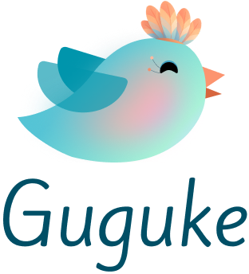
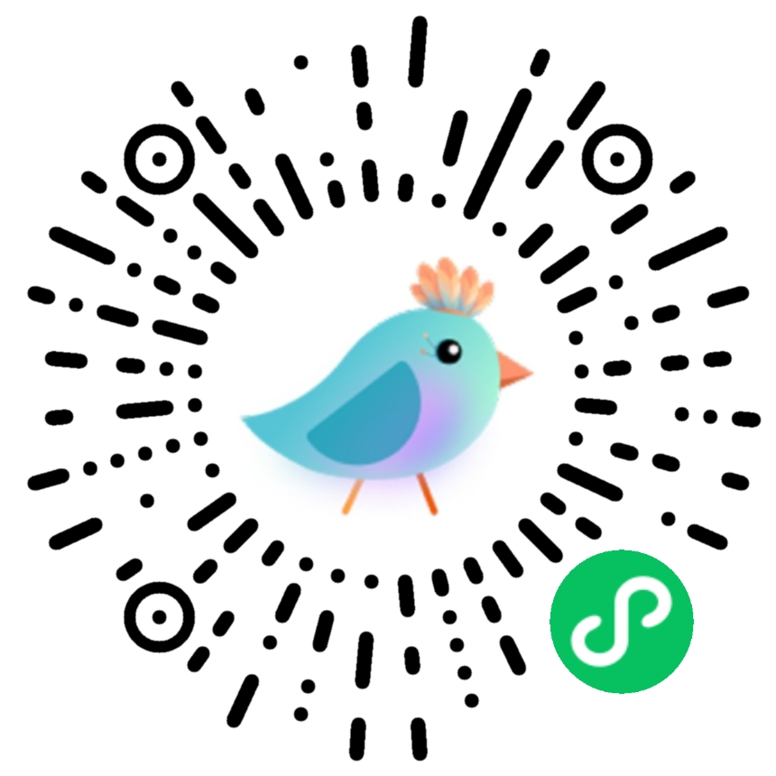

欢迎使用GGK SKY
我是你的小助理，能查，能听，能说，能帮你链接开发工具。
把电脑搬进手机，随时随地远程办公。 扫码即连，手机一句话，电脑跑命令。 GGK，让你的工作全搞定。



我是你的小助理，能查，能听，能说，能帮你链接开发工具。


以前调板子必须死守在实验室。现在用 GGK 的远程设备连线，在家甚至在出差路上都能直接抓取串口日志、远程烧录固件，真正实现了软硬件异地协同调试。

一个人打通软硬件最头疼的就是查引脚和翻看各种奇葩的芯片 Datasheet。GGK 的智能选型和手册知识库简直就是救星，我的产品原型开发周期至少缩短了 40%。

每天都要帮大量客户做技术选型和替代对标。GGK 百万级的手册库和国产替代一键比对功能非常高效，能瞬间拉出多款 MCU 的关键参数差异，妥妥的生产力神器。

作为嵌入式方向的研究生，以前看 Datasheet 像看天书。GGK 能直接翻译寄存器含义、生成初始化模板代码，学习效率翻倍，导师都以为我开窍了。

周末在家搞开源硬件项目，手边没有示波器也能用 GGK 远程连实验室设备抓波形、跑测试脚本。一个人就是一支硬件团队的感觉太爽了。

回归测试要覆盖十几种板卡配置，以前纯靠人力熬。GGK 批量下发测试用例、自动收集日志生成报告，一个晚上跑完一周的量，漏测率直线下降。
以前调板子必须死守在实验室。现在用 GGK 的远程设备连线，在家甚至在出差路上都能直接抓取串口日志、远程烧录固件，真正实现了软硬件异地协同调试。
一个人打通软硬件最头疼的就是查引脚和翻看各种奇葩的芯片 Datasheet。GGK 的智能选型和手册知识库简直就是救星，我的产品原型开发周期至少缩短了 40%。
每天都要帮大量客户做技术选型和替代对标。GGK 百万级的手册库和国产替代一键比对功能非常高效，能瞬间拉出多款 MCU 的关键参数差异，妥妥的生产力神器。
作为嵌入式方向的研究生，以前看 Datasheet 像看天书。GGK 能直接翻译寄存器含义、生成初始化模板代码，学习效率翻倍，导师都以为我开窍了。
周末在家搞开源硬件项目，手边没有示波器也能用 GGK 远程连实验室设备抓波形、跑测试脚本。一个人就是一支硬件团队的感觉太爽了。
回归测试要覆盖十几种板卡配置，以前纯靠人力熬。GGK 批量下发测试用例、自动收集日志生成报告，一个晚上跑完一周的量，漏测率直线下降。

我们课题组有几十台散落各处的分布式树莓派和边缘工控机节点，以往维护极其头疼。用 GGK 做设备看板和集中编译管理非常丝滑，完全长在极客的审美点上。

写 Verilog 和配置约束最烦的就是反复查阅几千页的代码寄存器映射。GGK 的 AI 语境自动出码能直接基于底层硬件上下文生成标准的驱动结构体，极其硬核。

我们团队异地办公，硬件在深圳，软件在杭州。通过 GGK 的云端真机在环测试，完美打通了硬件流水线 CI/CD，彻底终结了以往跨城物理邮寄板子联调的低效历史。

缺料断供时最怕替代料选型拖进度。GGK 的国产替代库能按封装、电气参数一键匹配可Pin-to-Pin替换的器件，并直接导出BOM比对表，选型周报半小时搞定。
上百台边缘网关要做OTA灰度推送，GGK 的设备分组和批量执行能力让发布像管服务器一样简单，回滚也是一键的事，告警量降了七成。

评审会上常常被追问某颗料的替代方案和供货风险。GGK 让我现场就能拉出替代矩阵和厂商产能预警，决策有据有底气，不再被研发反向追问到词穷。
我们课题组有几十台散落各处的分布式树莓派和边缘工控机节点，以往维护极其头疼。用 GGK 做设备看板和集中编译管理非常丝滑，完全长在极客的审美点上。
写 Verilog 和配置约束最烦的就是反复查阅几千页的代码寄存器映射。GGK 的 AI 语境自动出码能直接基于底层硬件上下文生成标准的驱动结构体，极其硬核。
我们团队异地办公，硬件在深圳，软件在杭州。通过 GGK 的云端真机在环测试，完美打通了硬件流水线 CI/CD，彻底终结了以往跨城物理邮寄板子联调的低效历史。
缺料断供时最怕替代料选型拖进度。GGK 的国产替代库能按封装、电气参数一键匹配可Pin-to-Pin替换的器件，并直接导出BOM比对表，选型周报半小时搞定。
上百台边缘网关要做OTA灰度推送，GGK 的设备分组和批量执行能力让发布像管服务器一样简单，回滚也是一键的事，告警量降了七成。
评审会上常常被追问某颗料的替代方案和供货风险。GGK 让我现场就能拉出替代矩阵和厂商产能预警，决策有据有底气，不再被研发反向追问到词穷。
不仅回答问题，更能进入你的工作流，帮助你真正完成工作。